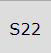
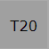
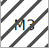
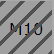

Real work allocation¶
Timesheet¶
This screen is dedicated to entering actual work.
The resource completes their work every day, for each assigned task.
Data entry for a resource is done on a weekly basis.
The corresponding cost to the real work is automatically updated to the assignment, activity and project.
Timesheet zone screen¶
Selection and filters¶
This filters allows to select a timesheet for a resource and for a period.
Resource selection
By default, users can only select themselves as a resource.
Access to other resources timesheet depending on Specific access.
Selection period
By default, the period is determined according to the current day.
Targeted periods are displayed in different places on the screen.
You can select the number of the week and its year directly with the corresponding filters.
The “first day” filter allows you to choose a specific date, day, month and year. The full week containing this date will be displayed.
The button today targets the current week
The D-day is highlighted.
Switch display¶
By default, the timesheet display is presented by week.
By clicking on the “switch the month view” button, the timesheet display switches to monthly view.
The start and end dates of an item are no longer displayed in this mode.
Tools¶
Timesheet options¶
Click on
 to save timesheet datas.
to save timesheet datas.Click on
 to refresh datas.
to refresh datas.Click on
 to display options.
to display options.
Display¶
The toggle buttons help you filter the information visible on your timesheet.
Switch the button to the right (green button) to activate the display.
Weekly meetings only**
Recurring meetings display all meetings with one meeting per line. Depending on the period and frequency of your recurring meetings, many lines may be displayed.
With this option, you only display meetings for the week displayed on the screen.
Closed items
Switch the button to show closed tasks. Archived tasks.
Done items
Switch the button to show completed tasks. With left work to 0.
Items not started
Switch the button to show unstarted tasks. The macro state in progress must be activated and saved for the tasks for this option.
Paused items
Switch the button to show show tasks that have been paused. the pause macro state must be activated and saved for the tasks for this option.
ID
Show ID to identify all single task.
Planned work
Planned work is indicated on each input cell, in the upper left corner, in light blue.
Allows you to display the planned working time per day for the resource assigned to the task.
Planned work¶
Resource selected for the project only
You can limit the display of the resource selection drop-down list.
If you have selected a project in your project selector then you will only see the resources assigned to that project.
Filter¶
Quick filters are used to define the list of tasks displayed by name and ID.
Export¶


{kind=link}
Data entry validation¶
Enter real as planned
Planned work on an activity for a resource is carried forward for each day.
If there is no figure displayed then it means that the resource is not supposed to be informed of the actual work on this activity during this period.
Planned work for the resource¶
Even if planned work is planned for a resource, there is nothing forcing it to complete its work as expected.
The option Show planned work must be activated.
Dispatch work
You have the possibility to reduce the granularity of your activity by distributing the work carried out on it into “different jobs”.
This way you can accurately report which task you have carried out.
It is necessary to activate the specific access Activation of the assignment breakdown
Dispatched work for the activity¶
Click on  to dispatch the work on a line of your activity.
to dispatch the work on a line of your activity.
In the popup, enter the name of your job, if it exists, it will be available in the drop-down list.
Dispatch work Popup¶
If no job has been entered yet, click on  to add a job.
to add a job.
Enter the time you spent on this job.
The Uncertainties and progress fields are not mandatory and can be left blank.
Validate.
Result dispatch work¶
The amount of work is automatically calculated.
No restrictions are made even if you have work planned on another activity.
Like any line in the timesheet, you can exceed the resource’s FTE if the settings allow you to do so.
To view the work dispatch, click on .
You can edit and modify this list.
To view all the “work” on your activities, the List of works for an activity report is available.
Submit work
ProjeQtOr offers a system of validation of charges which makes it possible to follow the information of the real work of resources by a hierarchical manager.
After sending the actual work, you can no longer change the actual working time for the week.
You must cancel the validation request to make a change.
Validate work
Project managers can validate the work or any other personalized profile authorized to do so.
Only people with the necessary permissions can see this button
When the work is validated, then the resource can no longer modify its work on this week. Likewise, the cancellation of validation will no longer be available.
The validation system is optional and can therefore be hidden.
Task Zone¶
The list displays the tasks assigned to the resource selected in the list.
Click on the activity name to access the activity details screen.
Tasks assigned with actual work are always displayed, even when closed.
The function of the resource on this task is displayed at the end of the line.
Note
A resource can have multiple functions.
It is possible to assign the same resource several times but with different functions to monitor project costs.
The icon
 indicates that there is a comment on the assigned task.
indicates that there is a comment on the assigned task.Simply move the mouse over the icon to see the latest comment.
Click to view all comments
A global comment can be added on the weekly follow-up.
{kind=link}
The Start and End columns display the planned dates for each activity.
Entry field¶
In order to see and know the assignments on a task, several columns indicate the periods assigned to a resource
Assigned
It is the work assigned to the resource that is calculated by the software.
Real work
This is the work actually performed and reported by the resource.
Left work
This is the work that the resource still has to provide for this task
Left work is automatically decreased on input of real work.
Resources can adjust this value to estimate the work needed to complete the task.
Reassessed
This is the work required to complete the task. It’s the actual work + the rest to do. See: “progress-section-date-duration”
You cannot edit Assigned Work, Actual Work, and Reassessed directly in columns.
This information is calculated directly by the software based on what you have entered
Real work entry
Area to enter real work. It possible put real work in off days.
Columns of days off is displayed in grey.
Days off is determine in resource calendar definition.
Total of days
On the last row is the sum for all days of the week.
It is a synthesis displayed for each project and globally for the whole week.
The resource capacity is defined by the number of hours per day and the resource capacity (fte).

Total of the day Zone¶
Total for the day is green if entries are completely within the resource’s ETP capacity
The total for the day is light red if entries are greater than the resource’s FTE capacity.
Total for the day is dark red if entries are greater than the maximum daily work allowed on the resource.
A message A message warns you that you exceed the authorized fixed quota.
You will not be able to save the timesheet with a higher quota
Total for the day is uncolored if entries are less than the resource’s FTE capacity
See also
-
Allows to set the unit time for real work and workload and the number of days worked per week. The number of hours per day is defined here.
-
You can set many levers, alerts or display options
Generation of alerts if real work is not entered
You can trigger alerts on the entry of actual work for different collaborators. These messages can be sent at a frequency defined by email or displayed as an alert directly in the application.
-
You can automatically fill in the actual work from the work scheduled up to a given date and then trigger the automatic calculation of the projects from the day after that date.
The status of tasks¶
The task status can be changed automatically according to data entries on real work and left work.
Set to first in progress status: if the parameter value is set to “Yes”, when real work is entered on a task, its status will be changed automatically to the first status “In progress”.
Set to first done status: if the parameter value is set to “Yes”, when left work is set to zero on a task, its status will be changed automatically to the first status “done”.
Change status validation
An icon will be displayed on the task if a status change is applicable.
 Due to real work is entered, the task status will be changed to the first ‘In progress’ status.
Due to real work is entered, the task status will be changed to the first ‘In progress’ status. The real work is entered, but the task status will not change because at issue is occurring.
The real work is entered, but the task status will not change because at issue is occurring. Due to no more left work, the task status will be changed to the first ‘done’ status.
Due to no more left work, the task status will be changed to the first ‘done’ status. No more left work, but the task status will not change because at issue is occurring.
No more left work, but the task status will not change because at issue is occurring.
Warning
If a responsible or a result are set as mandatory in element type definition for the task. It’s impossible to set those values by real work allocation screen.
The change status must be done in treatment section on the task definition screen.
Pool of ressource management¶
When the option display pools on Timesheet is activated, when a resource is assigned to an activity at the same time as a resource pool of which it is a part, then it will see the row for itself and the row for the resource pool.
When the option is disabled then the resource only sees its line.
Timesheet with resource and resource pool lines¶
When the option is set to no then you can choose to display at least the left work to be done on this one.
The following option show pool to update their left work allows you to display a row for the pool below the resource row to modify the left work.
an icon then appears at the end of the resource line for the pool.

icon pool of resources for the left work¶
Click on it and a line is available to modify the left work for the pool of resources.
pool of resource line¶
Timesheet Validation¶
Timesheet validation¶
The timesheet validation screen allows the project manager to receive, verify and validate the time allocated weekly by the resources to an activity for all the projects.
Selection and filters¶
You can filter the display of this screen by resource, by team and by period.
The visibility of resources in the list is defined according to your rights defined by your profile.
You can increase the display restriction with the possibility to show only some of the validation request.
Color code¶
According to the work completed by the resource, and according to the expected workload for this resource.
The project leader receives the timesheet with a precise color code.
Green: The completed job is the same as the expected one.
Red: The filled workload is shorter or longer. It does not match the expected work.
Orange: the job is not the same as the expected job but the load is the same.
Example of completed charges which generate the orange color code¶
Validation¶
In the Timesheet submitted column you see the date and time when the resource to send the submission.
In the Timesheet validation column you have the possibility to validate the work or to cancel the submission so that the resource can correct his work.
Monthly consolidation¶
Monthly consolidation allows you to view, control and validate resource allocations to a particular project for an entire month. This screen will list all the projects on which the user has visibility.
Monthly consolidation screen¶
Filters will limit the list:
Project to restrict the listed projects to this project and its sub-projects
Project Type to restrict the listed projects to projects of this type
Organization to restrict the listed projects to the projects of this organization
Month and year to restrict to this date
Note
By default, this will be the last month for which projects are still blocked, or failing this it will be the current month.
This screen will display for each project not validated:
The currently known CA
The currently known validated load
The total actual load currently known to the project
The actual load consumed on the project for the selected month
The remainder to be done currently known
The currently known reassessed load
The currently known margin (load) = load validated - load reassessed
For validated projects, the data displayed is that stored during validation.
Block a project over a month
The  and
and  buttons allow you to block or unblock charges beyond the month-end date. When the project is blocked for a given month, you cannot enter a charge for the following month, even if it has started. The block will be propagated recursively to sub-projects.
buttons allow you to block or unblock charges beyond the month-end date. When the project is blocked for a given month, you cannot enter a charge for the following month, even if it has started. The block will be propagated recursively to sub-projects.
Validate a project over a month
The and buttons allow you to block or unblock charges beyond the month-end date. When the project is blocked for a given month, you cannot enter a charge for the following month, even if it has started. The block will be propagated recursively to sub-projects.
{kind=link}
{kind=link}
Warning
Access to the blocking / unlocking and the validation button will be configured by a specific right.
Absences¶
Absences must be reported as soon as possible so that the calculation of your project schedule takes into account the unavailability of resources.
projeqtor offers two types of non-productive work records:
A simple system, that of absences, linked to an administrative project which will make it possible to record real work in the future.
a complex system, that of human resources, linked to a system of contracts and rights acquired over time.
Absences are related to an administrative type project.
absences screen¶
Only one project is necessary for all the resources, without them being allocated to this project.
Resource Selector
Depending on your rights and profile, you can have access to the resources that you manage or only to yourself.
Select the resource whose non-productive days you want to add as well as the year on which these days will be retained.
Types of absences
Each type of absence is an activity related to the administrative project.
You can create as many activities as types of absences.
you must select an activity first to be able to click on calendar days.
Accelerator
After selecting the type of leave, click on the accelerators to enter the selected value directly in the date boxes in the calendar.
1: full day
0.5: half day on the type of leave selected
0: delete the days already entered
You can combine an absence recurrence for a given day.
Select the day value (0.5, 1) and then select a day from the drop-down list.
The corresponding days will be marked absent for the previously selected value from the current date until the end of the current year.
You can also select a period between two dates to apply the selected value.
calendar
Select the type of leave from the existing list.
Click on the boxes of the dates concerned by non-productive work or use accelerators.
The boxes are filled with the color of the leave type.
If you use the human resources absence system, then you will see the dedicated project appear.
list of projects and related activities on the absences screen¶
Absences recorded via the human resources system will still be displayed on the absences screen.
Others color
 indicate non-working days.
{kind=link}
 indicate real work (timesheet).
{kind=link}
 indicates the week has been submited/validated.
{kind=link}
 indicate that real work recorded has been submitted/validated.
{kind=link}